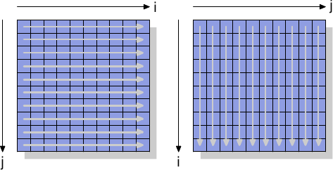
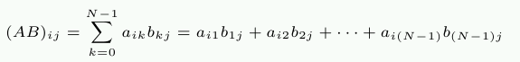
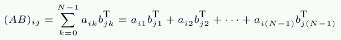
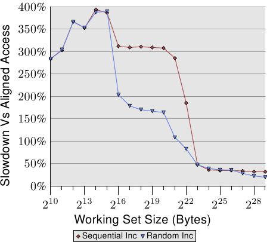

Advertisement
Stand out from the crowd. Get yourself some of these LWN T-shirts, stickers, mugs, and more.
Weekly Edition
Return to the Front page
| |||||||||||||||||||||||||||||||||||||||||||||||
Memory part 5: What programmers can do
[Editor's note: welcome to part 5 of Ulrich Drepper's "What every
programmer should know about memory". This part is the first half of
section 6, which discusses what programmers can do to improve the
memory performance of their code. Part 1, part 2, part 3, and part 4 remain online for
those who have not yet read them.]
6 What Programmers Can DoAfter the descriptions in the previous sections it is clear that there are many, many opportunities for programmers to influence a program's performance, positively or negatively. And this is for memory-related operations only. We will proceed in covering the opportunities from the ground up, starting with the lowest levels of physical RAM access and L1 caches, up to and including OS functionality which influences memory handling.
6.1 Bypassing the CacheWhen data is produced and not (immediately) consumed again, the fact that memory store operations read a full cache line first and then modify the cached data is detrimental to performance. This operation pushes data out of the caches which might be needed again in favor of data which will not be used soon. This is especially true for large data structures, like matrices, which are filled and then used later. Before the last element of the matrix is filled the sheer size evicts the first elements, making caching of the writes ineffective. For this and similar situations, processors provide support for non-temporal write operations. Non-temporal in this context means the data will not be reused soon, so there is no reason to cache it. These non-temporal write operations do not read a cache line and then modify it; instead, the new content is directly written to memory. This might sound expensive but it does not have to be. The processor will try to use write-combining (see Section 3.3.3) to fill entire cache lines. If this succeeds no memory read operation is needed at all. For the x86 and x86-64 architectures a number of intrinsics are provided by gcc:
#include <emmintrin.h> void _mm_stream_si32(int *p, int a); void _mm_stream_si128(int *p, __m128i a); void _mm_stream_pd(double *p, __m128d a); #include <xmmintrin.h> void _mm_stream_pi(__m64 *p, __m64 a); void _mm_stream_ps(float *p, __m128 a); #include <ammintrin.h> void _mm_stream_sd(double *p, __m128d a); void _mm_stream_ss(float *p, __m128 a); These instructions are used most efficiently if they process large amounts of data in one go. Data is loaded from memory, processed in one or more steps, and then written back to memory. The data “streams” through the processor, hence the names of the intrinsics. The memory address must be aligned to 8 or 16 bytes respectively. In code using the multimedia extensions it is possible to replace the normal _mm_store_* intrinsics with these non-temporal versions. In the matrix multiplication code in Section 9.1 we do not do this since the written values are reused in a short order of time. This is an example where using the stream instructions is not useful. More on this code in Section 6.2.1. The processor's write-combining buffer can hold requests for partial writing to a cache line for only so long. It is generally necessary to issue all the instructions which modify a single cache line one after another so that the write-combining can actually take place. An example for how to do this is as follows:
Assuming the pointer p is appropriately aligned, a call to this function will set all bytes of the addressed cache line to c. The write-combining logic will see the four generated movntdq instructions and only issue the write command for the memory once the last instruction has been executed. To summarize, this code sequence not only avoids reading the cache line before it is written, it also avoids polluting the cache with data which might not be needed soon. This can have huge benefits in certain situations. An example of everyday code using this technique is the memset function in the C runtime, which should use a code sequence like the above for large blocks.
Some architectures provide specialized solutions. The PowerPC architecture defines the dcbz instruction which can be used to clear an entire cache line. The instruction does not really bypass the cache since a cache line is allocated for the result, but no data is read from memory. It is more limited than the non-temporal store instructions since a cache line can only be set to all-zeros and it pollutes the cache (in case the data is non-temporal), but no write-combining logic is needed to achieve the results. To see the non-temporal instructions in action we will look at a new test which is used to measure writing to a matrix, organized as a two-dimensional array. The compiler lays out the matrix in memory so that the leftmost (first) index addresses the row which has all elements laid out sequentially in memory. The right (second) index addresses the elements in a row. The test program iterates over the matrix in two ways: first by increasing the column number in the inner loop and then by increasing the row index in the inner loop. This means we get the behavior shown in Figure 6.1.
 We measure the time it takes to initialize a 3000×3000 matrix. To see how memory behaves, we use store instructions which do not use the cache. On IA-32 processors the “non-temporal hint” is used for this. For comparison we also measure ordinary store operations. The results can be seen in Table 6.1.
For the normal writes which do use the cache we see the expected result: if memory is used sequentially we get a much better result, 0.048s for the whole operation translating to about 750MB/s, compared to the more-or-less random access which takes 0.127s (about 280MB/s). The matrix is large enough that the caches are essentially ineffective. The part we are mainly interested in here are the writes bypassing the cache. It might be surprising that the sequential access is just as fast here as in the case where the cache is used. The reason for this behavior is that the processor is performing write-combining as explained above. Additionally, the memory ordering rules for non-temporal writes are relaxed: the program needs to explicitly insert memory barriers (sfence instructions for the x86 and x86-64 processors). This means the processor has more freedom to write back the data and thereby using the available bandwidth as well as possible.
In the case of column-wise access in the inner loop the situation is different. The results are significantly slower than in the case of cached accesses (0.16s, about 225MB/s). Here we can see that no write combining is possible and each memory cell must be addressed individually. This requires constantly selecting new rows in the RAM chips with all the associated delays. The result is a 25% worse result than the cached run. On the read side, processors, until recently, lacked support aside from weak hints using non-temporal access (NTA) prefetch instructions. There is no equivalent to write-combining for reads, which is especially bad for uncacheable memory such as memory-mapped I/O. Intel, with the SSE4.1 extensions, introduced NTA loads. They are implemented using a small number of streaming load buffers; each buffer contains a cache line. The first movntdqa instruction for a given cache line will load a cache line into a buffer, possibly replacing another cache line. Subsequent 16-byte aligned accesses to the same cache line will be serviced from the load buffer at little cost. Unless there are other reasons to do so, the cache line will not be loaded into a cache, thus enabling the loading of large amounts of memory without polluting the caches. The compiler provides an intrinsic for this instruction:
#include <smmintrin.h> __m128i _mm_stream_load_si128 (__m128i *p); This intrinsic should be used multiple times, with addresses of 16-byte blocks passed as the parameter, until each cache line is read. Only then should the next cache line be started. Since there are a few streaming read buffers it might be possible to read from two memory locations at once.
What we should take away from this experiment is that modern CPUs very nicely optimize uncached write and (more recently) read accesses as long as they are sequential. This knowledge can come in very handy when handling large data structures which are used only once. Second, caches can help to cover up some—but not all—of the costs of random memory access. Random access in this example is 70% slower due to the implementation of RAM access. Until the implementation changes, random accesses should be avoided whenever possible. In the section about prefetching we will again take a look at the non-temporal flag.
6.2 Cache AccessThe most important improvements a programmer can make with respect to caches are those which affect the level 1 cache. We will discuss it first before including the other levels. Obviously, all the optimizations for the level 1 cache also affect the other caches. The theme for all memory access is the same: improve locality (spatial and temporal) and align the code and data.
6.2.1 Optimizing Level 1 Data Cache Access In section Section 3.3 we have already seen how much the effective use of the L1d cache can improve performance. In this section we will show what kinds of code changes can help to improve that performance. Continuing from the previous section, we first concentrate on optimizations to access memory sequentially. As seen in the numbers of Section 3.3, the processor automatically prefetches data when memory is accessed sequentially. The example code used is a matrix multiplication. We use two square matrices of 1000×1000 double elements. For those who have forgotten the math, given two matrices A and B with elements aij and bij with 0 ≤ i,j < N the product is

A straight-forward C implementation of this can look like this:
The two input matrices are mul1 and mul2. The result matrix res is assumed to be initialized to all zeroes. It is a nice and simple implementation. But it should be obvious that we have exactly the problem explained in Figure 6.1. While mul1 is accessed sequentially, the inner loop advances the row number of mul2. That means that mul1 is handled like the left matrix in Figure 6.1 while mul2 is handled like the right matrix. This cannot be good. There is one possible remedy one can easily try. Since each element in the matrices is accessed multiple times it might be worthwhile to rearrange (“transpose,” in mathematical terms) the second matrix mul2 before using it.
 After the transposition (traditionally indicated by a superscript ‘T’) we now iterate over both matrices sequentially. As far as the C code is concerned, it now looks like this:
We create a temporary variable to contain the transposed matrix. This requires touching more memory, but this cost is, hopefully, recovered since the 1000 non-sequential accesses per column are more expensive (at least on modern hardware). Time for some performance tests. The results on a Intel Core 2 with 2666MHz clock speed are (in clock cycles):
Through the simple transformation of the matrix we can achieve a 76.6% speed-up! The copy operation is more than made up. The 1000 non-sequential accesses really hurt. The next question is whether this is the best we can do. We certainly need an alternative method anyway which does not require the additional copy. We will not always have the luxury to be able to perform the copy: the matrix can be too large or the available memory too small. The search for an alternative implementation should start with a close examination of the math involved and the operations performed by the original implementation. Trivial math knowledge allows us to see that the order in which the additions for each element of the result matrix are performed is irrelevant as long as each addend appears exactly once. {We ignore arithmetic effects here which might change the occurrence of overflows, underflows, or rounding.} This understanding allows us to look for solutions which reorder the additions performed in the inner loop of the original code. Now let us examine the actual problem in the execution of the original code. The order in which the elements of mul2 are accessed is: (0,0), (1,0), …, (N-1,0), (0,1), (1,1), …. The elements (0,0) and (0,1) are in the same cache line but, by the time the inner loop completes one round, this cache line has long been evicted. For this example, each round of the inner loop requires, for each of the three matrices, 1000 cache lines (with 64 bytes for the Core 2 processor). This adds up to much more than the 32k of L1d available. But what if we handle two iterations of the middle loop together while executing the inner loop? In this case we use two double values from the cache line which is guaranteed to be in L1d. We cut the L1d miss rate in half. That is certainly an improvement, but, depending on the cache line size, it still might not be as good as we can get it. The Core 2 processor has a L1d cache line size of 64 bytes. The actual value can be queried using
sysconf (_SC_LEVEL1_DCACHE_LINESIZE) at runtime or using the getconf utility from the command line so that the program can be compiled for a specific cache line size. With sizeof(double) being 8 this means that, to fully utilize the cache line, we should unroll the middle loop 8 times. Continuing this thought, to effectively use the res matrix as well, i.e., to write 8 results at the same time, we should unroll the outer loop 8 times as well. We assume here cache lines of size 64 but the code works also well on systems with 32-byte cache lines since both cache lines are also 100% utilized. In general it is best to hardcode cache line sizes at compile time by using the getconf utility as in:
gcc -DCLS=$(getconf LEVEL1_DCACHE_LINESIZE) ... If the binaries are supposed to be generic, the largest cache line size should be used. With very small L1ds this might mean that not all the data fits into the cache but such processors are not suitable for high-performance programs anyway. The code we arrive at looks something like this:
This looks quite scary. To some extent it is but only because it incorporates some tricks. The most visible change is that we now have six nested loops. The outer loops iterate with intervals of SM (the cache line size divided by sizeof(double)). This divides the multiplication in several smaller problems which can be handled with more cache locality. The inner loops iterate over the missing indexes of the outer loops. There are, once again, three loops. The only tricky part here is that the k2 and j2 loops are in a different order. This is done since, in the actual computation, only one expression depends on k2 but two depend on j2. The rest of the complication here results from the fact that gcc is not very smart when it comes to optimizing array indexing. The introduction of the additional variables rres, rmul1, and rmul2 optimizes the code by pulling common expressions out of the inner loops, as far down as possible. The default aliasing rules of the C and C++ languages do not help the compiler making these decisions (unless restrict is used, all pointer accesses are potential sources of aliasing). This is why Fortran is still a preferred language for numeric programming: it makes writing fast code easier. {In theory the restrict keyword introduced into the C language in the 1999 revision should solve the problem. Compilers have not caught up yet, though. The reason is mainly that too much incorrect code exists which would mislead the compiler and cause it to generate incorrect object code.} How all this work pays off can be seen in Table 6.2.
By avoiding the copying we gain another 6.1% of performance. Plus, we do not need any additional memory. The input matrices can be arbitrarily large as long as the result matrix fits into memory as well. This is a requirement for a general solution which we have now achieved. There is one more column in Table 6.2 which has not been explained. Most modern processors nowadays include special support for vectorization. Often branded as multi-media extensions, these special instructions allow processing of 2, 4, 8, or more values at the same time. These are often SIMD (Single Instruction, Multiple Data) operations, augmented by others to get the data in the right form. The SSE2 instructions provided by Intel processors can handle two double values in one operation. The instruction reference manual lists the intrinsic functions which provide access to these SSE2 instructions. If these intrinsics are used the program runs another 7.3% (relative to the original) faster. The result is a program which runs in 10% of the time of the original code. Translated into numbers which people recognize, we went from 318 MFLOPS to 3.35 GFLOPS. Since we are here only interested in memory effects here, the program code is pushed out into Section 9.1. It should be noted that, in the last version of the code, we still have some cache problems with mul2; prefetching still will not work. But this cannot be solved without transposing the matrix. Maybe the cache prefetching units will get smarter to recognize the patterns, then no additional change would be needed. 3.19 GFLOPS on a 2.66 GHz processor with single-threaded code is not bad, though.
What we optimized in the example of the matrix multiplication is the use of the loaded cache lines. All bytes of a cache line are always used. We just made sure they are used before the cache line is evacuated. This is certainly a special case. It is much more common to have data structures which fill one or more cache lines where the program uses only a few members at any one time. In Figure 3.11 we have already seen the effects of large structure sizes if only few members are used.
Figure 6.2 shows the results of yet another set of benchmarks performed using the by now well-known program. This time two values of the same list element are added. In one case, both elements are in the same cache line; in the other case, one element is in the first cache line of the list element and the second is in the last cache line. The graph shows the slowdown we are experiencing. Unsurprisingly, in all cases there are no negative effects if the working set fits into L1d. Once L1d is no longer sufficient, penalties are paid by using two cache lines in the process instead of one. The red line shows the data when the list is laid out sequentially in memory. We see the usual two step patterns: about 17% penalty when the L2 cache is sufficient and about 27% penalty when the main memory has to be used. In the case of random memory accesses the relative data looks a bit different. The slowdown for working sets which fit into L2 is between 25% and 35%. Beyond that it goes down to about 10%. This is not because the penalties get smaller but, instead, because the actual memory accesses get disproportionally more costly. The data also shows that, in some cases, the distance between the elements does matter. The Random 4 CLs curve shows higher penalties because the first and fourth cache lines are used. An easy way to see the layout of a data structure compared to cache lines is to use the pahole program (see [dwarves]). This program examines the data structures defined in a binary. Take a program containing this definition:
Compiled on a 64-bit machine, the output of pahole contains (among other things) the information shown in Figure 6.3.
This output tells us a lot. First, it shows that the data structure uses up more than one cache line. The tool assumes the currently-used processor's cache line size, but this value can be overridden using a command line parameter. Especially in cases where the size of the structure is barely over the limit of a cache line, and many objects of this type are allocated, it makes sense to seek a way to compress that structure. Maybe a few elements can have a smaller type, or maybe some fields are actually flags which can be represented using individual bits. In the case of the example the compression is easy and it is hinted at by the program. The output shows that there is a hole of four bytes after the first element. This hole is caused by the alignment requirement of the structure and the fill element. It is easy to see that the element b, which has a size of four bytes (indicated by the 4 at the end of the line), fits perfectly into the gap. The result in this case is that the gap no longer exists and that the data structure fits onto one cache line. The pahole tool can perform this optimization itself. If the —reorganize parameter is used and the structure name is added at the end of the command line the output of the tool is the optimized structure and the cache line use. Besides moving elements to fill gaps, the tool can also optimize bit fields and combine padding and holes. For more details see [dwarves]. Having a hole which is just large enough for the trailing element is, of course, the ideal situation. For this optimization to be useful it is required that the object itself is aligned to a cache line. We get to that in a bit. The pahole output also makes it easier to determine whether elements have to be reordered so that those elements which are used together are also stored together. Using the pahole tool, it is easily possible to determine which elements are in the same cache line and when, instead, the elements have to be reshuffled to achieve that. This is not an automatic process but the tool can help quite a bit. The position of the individual structure elements and the way they are used is important, too. As we have seen in Section 3.5.2 the performance of code with the critical word late in the cache line is worse. This means a programmer should always follow the following two rules:
For small structures, this means that the programmer should arrange the elements in the order in which they are likely accessed. This must be handled in a flexible way to allow the other optimizations, such as filling holes, to be applied as well. For bigger data structures each cache line-sized block should be arranged to follow the rules.
Reordering elements is not worth the time it takes, though, if the object itself is not aligned. The alignment of an object is determined by the alignment requirement of the data type. Each fundamental type has its own alignment requirement. For structured types the largest alignment requirement of any of its elements determines the alignment of the structure. This is almost always smaller than the cache line size. This means even if the members of a structure are lined up to fit into the same cache line an allocated object might not have an alignment matching the cache line size. There are two ways to ensure that the object has the alignment which was used when designing the layout of the structure:
The multimedia extensions previously mentioned in this section almost always require that the memory accesses are aligned. I.e., for 16 byte memory accesses the address is supposed to be 16 byte aligned. The x86 and x86-64 processors have special variants of the memory operations which can handle unaligned accesses but these are slower. This hard alignment requirement is nothing new for most RISC architectures which require full alignment for all memory accesses. Even if an architecture supports unaligned accesses this is sometimes slower than using appropriate alignment, especially if the misalignment causes a load or store to use two cache lines instead of one.
 Figure 6.4 shows the effects of unaligned memory accesses. The now well-known tests which increment a data element while visiting memory (sequentially or randomly) are measured, once with aligned list elements and once with deliberately misaligned elements. The graph shows the slowdown the program incurs because of the unaligned accesses. The effects are more dramatic for the sequential access case than for the random case because, in the latter case, the costs of unaligned accesses are partially hidden by the generally higher costs of the memory access. In the sequential case, for working set sizes which do fit into the L2 cache, the slowdown is about 300%. This can be explained by the reduced effectiveness of the L1 cache. Some increment operations now touch two cache lines, and beginning work on a list element now often requires reading of two cache lines. The connection between L1 and L2 is simply too congested. For very large working set sizes, the effects of the unaligned access are still 20% to 30%—which is a lot given that the aligned access time for those sizes is long. This graph should show that alignment must be taken seriously. Even if the architecture supports unaligned accesses, this must not be taken as “they are as good as aligned accesses”. There is some fallout from these alignment requirements, though. If an automatic variable has an alignment requirement, the compiler has to ensure that it is met in all situations. This is not trivial since the compiler has no control over the call sites and the way they handle the stack. This problem can be handled in two ways:
All of the commonly used application binary interfaces (ABIs) follow the second route. Programs will likely fail if a caller violates the rule and alignment is needed in the callee. Keeping alignment intact does not come for free, though. The size of a stack frame used in a function is not necessarily a multiple of the alignment. This means padding is needed if other functions are called from this stack frame. The big difference is that the stack frame size is, in most cases, known to the compiler and, therefore, it knows how to adjust the stack pointer to ensure alignment for any function which is called from that stack frame. In fact, most compilers will simply round the stack frame size up and be done with it. This simple way to handle alignment is not possible if variable length arrays (VLAs) or alloca are used. In that case, the total size of the stack frame is only known at runtime. Active alignment control might be needed in this case, making the generated code (slightly) slower. On some architectures, only the multimedia extensions require strict alignment; stacks on those architectures are always minimally aligned for the normal data types, usually 4 or 8 byte alignment for 32- and 64-bit architectures respectively. On these systems, enforcing the alignment incurs unnecessary costs. That means that, in this case, we might want to get rid of the strict alignment requirement if we know that it is never depended upon. Tail functions (those which call no other functions) which do no multimedia operations do not need alignment. Neither do functions which only call functions which need no alignment. If a large enough set of functions can be identified, a program might want to relax the alignment requirement. For x86 binaries gcc has support for relaxed stack alignment requirements:
-mpreferred-stack-boundary=2 If this option is given a value of N, the stack alignment requirement will be set to 2N bytes. So, if a value of 2 is used, the stack alignment requirement is reduced from the default (which is 16 bytes) to just 4 bytes. In most cases this means no additional alignment operation is needed since normal stack push and pop operations work on four-byte boundaries anyway. This machine-specific option can help to reduce code size and also improve execution speed. But it cannot be applied for many other architectures. Even for x86-64 it is generally not applicable since the x86-64 ABI requires that floating-point parameters are passed in an SSE register and the SSE instructions require full 16 byte alignment. Nevertheless, whenever the option is usable it can make a noticeable difference. Efficient placement of structure elements and alignment are not the only aspects of data structures which influence cache efficiency. If an array of structures is used, the entire structure definition affects performance. Remember the results in Figure 3.11: in this case we had increasing amounts of unused data in the elements of the array. The result was that prefetching was increasingly less effective and the program, for large data sets, became less efficient. For large working sets it is important to use the available cache as well as possible. To achieve this, it might be necessary to rearrange data structures. While it is easier for the programmer to put all the data which conceptually belongs together in the same data structure, this might not be the best approach for maximum performance. Assume we have a data structure as follows:
Further assume that these records are stored in a big array and that a frequently-run job adds up the expected payments of all the outstanding bills. In this scenario, the memory used for the buyer and buyer_id fields is unnecessarily loaded into the caches. Judging from the data in Figure 3.11 the program will perform up to 5 times worse than it could. It is much better to split the order data structure in two, storing the first two fields in one structure and the other fields elsewhere. This change certainly increases the complexity of the program, but the performance gains might justify this cost. Finally, let's consider another cache use optimization which, while also applying to the other caches, is primarily felt in the L1d access. As seen in Figure 3.8 an increased associativity of the cache benefits normal operation. The larger the cache, the higher the associativity usually is. The L1d cache is too large to be fully associative but not large enough to have the same associativity as L2 caches. This can be a problem if many of the objects in the working set fall into the same cache set. If this leads to evictions due to overuse of a set, the program can experience delays even though much of the cache is unused. These cache misses are sometimes called conflict misses. Since the L1d addressing uses virtual addresses, this is actually something the programmer can have control over. If variables which are used together are also stored together the likelihood of them falling into the same set is minimized. Figure 6.5 shows how quickly the problem can hit.
In the figure, the now familiar Follow {The test was performed on a 32-bit machine, hence NPAD=15 means one 64-byte cache line per list element.} with NPAD=15 test is measured with a special setup. The X–axis is the distance between two list elements, measured in empty list elements. In other words, a distance of 2 means that the next element's address is 128 bytes after the previous one. All elements are laid out in the virtual address space with the same distance. The Y–axis shows the total length of the list. Only one to 16 elements are used, meaning that the total working set size is 64 to 1024 bytes. The z–axis shows the average number of cycles needed to traverse each list element. The result shown in the figure should not be surprising. If few elements are used, all the data fits into L1d and the access time is only 3 cycles per list element. The same is true for almost all arrangements of the list elements: the virtual addresses are nicely mapped to L1d slots with almost no conflicts. There are two (in this graph) special distance values for which the situation is different. If the distance is a multiple of 4096 bytes (i.e., distance of 64 elements) and the length of the list is greater than eight, the average number of cycles per list element increases dramatically. In these situations all entries are in the same set and, once the list length is greater than the associativity, entries are flushed from L1d and have to be re-read from L2 the next round. This results in the cost of about 10 cycles per list element. With this graph we can determine that the processor used has an L1d cache with associativity 8 and a total size of 32kB. That means that the test could, if necessary, be used to determine these values. The same effects can be measured for the L2 cache but, here, it is more complex since the L2 cache is indexed using physical addresses and it is much larger. For programmers this means that associativity is something worth paying attention to. Laying out data at boundaries that are powers of two happens often enough in the real world, but this is exactly the situation which can easily lead to the above effects and degraded performance. Unaligned accesses can increase the probability of conflict misses since each access might require an additional cache line.
If this optimization is performed, another related optimization is possible, too. AMD's processors, at least, implement the L1d as several individual banks. The L1d can receive two data words per cycle but only if both words are stored in different banks or in a bank with the same index. The bank address is encoded in the low bits of the virtual address as shown in Figure 6.6. If variables which are used together are also stored together the likelihood that they are in different banks or the same bank with the same index is high.
6.2.2 Optimizing Level 1 Instruction Cache Access Preparing code for good L1i use needs similar techniques as good L1d use. The problem is, though, that the programmer usually does not directly influence the way L1i is used unless s/he writes code in assembler. If compilers are used, programmers can indirectly determine the L1i use by guiding the compiler to create a better code layout. Code has the advantage that it is linear between jumps. In these periods the processor can prefetch memory efficiently. Jumps disturb this nice picture because
These problems create stalls in execution with a possibly severe impact on performance. This is why today's processors invest heavily in branch prediction (BP). Highly specialized BP units try to determine the target of a jump as far ahead of the jump as possible so that the processor can initiate loading the instructions at the new location into the cache. They use static and dynamic rules and are increasingly good at determining patterns in execution. Getting data into the cache as soon as possible is even more important for the instruction cache. As mentioned in Section 3.1, instructions have to be decoded before they can be executed and, to speed this up (important on x86 and x86-64), instructions are actually cached in the decoded form, not in the byte/word form read from memory. To achieve the best L1i use programmers should look out for at least the following aspects of code generation:
We will now look at some compiler techniques available to help with optimizing programs according to these aspects. Compilers have options to enable levels of optimization; specific optimizations can also be individually enabled. Many of the optimizations enabled at high optimization levels (-O2 and -O3 for gcc) deal with loop optimizations and function inlining. In general, these are good optimizations. If the code which is optimized in these ways accounts for a significant part of the total execution time of the program, overall performance can be improved. Inlining of functions, in particular, allows the compiler to optimize larger chunks of code at a time which, in turn, enables the generation of machine code which better exploits the processor's pipeline architecture. The handling of both code and data (through dead code elimination or value range propagation, and others) works better when larger parts of the program can be considered as a single unit. A larger code size means higher pressure on the L1i (and also L2 and higher level) caches. This can lead to less performance. Smaller code can be faster. Fortunately gcc has an optimization option to specify this. If -Os is used the compiler will optimize for code size. Optimizations which are known to increase the code size are disabled. Using this option often produces surprising results. Especially if the compiler cannot really take advantage of loop unrolling and inlining, this option is a big win. Inlining can be controlled individually as well. The compiler has heuristics and limits which guide inlining; these limits can be controlled by the programmer. The -finline-limit option specifies how large a function must be to be considered too large for inlining. If a function is called in multiple places, inlining it in all of them would cause an explosion in the code size. But there is more. Assume a function inlcand is called in two functions f1 and f2. The functions f1 and f2 are themselves called in sequence.
Table 6.3 shows how the generated code could look like in the cases of no inline and inlining in both functions. If the function inlcand is inlined in both f1 and f2 the total size of the generated code is:
size f1 + size f2 + 2 × size inlcand If no inlining happens, the total size is smaller by size inlcand. This is how much more L1i and L2 cache is needed if f1 and f2 are called shortly after one another. Plus: if inlcand is not inlined, the code might still be in L1i and it will not have to be decoded again. Plus: the branch prediction unit might do a better job of predicting jumps since it has already seen the code. If the compiler default for the upper limit on the size of inlined functions is not the best for the program, it should be lowered. There are cases, though, when inlining always makes sense. If a function is only called once it might as well be inlined. This gives the compiler the opportunity to perform more optimizations (like value range propagation, which might significantly improve the code). That inlining might be thwarted by the selection limits. gcc has, for cases like this, an option to specify that a function is always inlined. Adding the always_inline function attribute instructs the compiler to do exactly what the name suggests. In the same context, if a function should never be inlined despite being small enough, the noinline function attribute can be used. Using this attribute makes sense even for small functions if they are called often from different places. If the L1i content can be reused and the overall footprint is reduced this often makes up for the additional cost of the extra function call. Branch prediction units are pretty good these days. If inlining can lead to more aggressive optimizations things look different. This is something which must be decided on a case-by-case basis. The always_inline attribute works well if the inline code is always used. But what if this is not the case? What if the inlined function is called only occasionally:
The code generated for such a code sequence in general matches the structure of the sources. That means first comes the code block A, then a conditional jump which, if the condition evaluates to false, jumps forward. The code generated for the inlined inlfct comes next, and finally the code block C. This looks all reasonable but it has a problem. If the condition is frequently false, the execution is not linear. There is a big chunk of unused code in the middle which not only pollutes the L1i due to prefetching, it also can cause problems with branch prediction. If the branch prediction is wrong the conditional expression can be very inefficient. This is a general problem and not specific to inlining functions. Whenever conditional execution is used and it is lopsided (i.e., the expression far more often leads to one result than the other) there is the potential for false static branch prediction and thus bubbles in the pipeline. This can be prevented by telling the compiler to move the less often executed code out of the main code path. In that case the conditional branch generated for an if statement would jump to a place out of the order as can be seen in the following figure.
The upper parts represents the simple code layout. If the area B, e.g. generated from the inlined function inlfct above, is often not executed because the conditional I jumps over it, the prefetching of the processor will pull in cache lines containing block B which are rarely used. Using block reordering this can be changed, with a result that can be seen in the lower part of the figure. The often-executed code is linear in memory while the rarely-executed code is moved somewhere where it does not hurt prefetching and L1i efficiency. gcc provides two methods to achieve this. First, the compiler can take profiling output into account while recompiling code and lay out the code blocks according to the profile. We will see how this works in Section 7. The second method is through explicit branch prediction. gcc recognizes __builtin_expect:
long __builtin_expect(long EXP, long C); This construct tells the compiler that the expression EXP most likely will have the value C. The return value is EXP. __builtin_expect is meant to be used in an conditional expression. In almost all cases will it be used in the context of boolean expressions in which case it is much more convenient to define two helper macros:
#define unlikely(expr) __builtin_expect(!!(expr), 0) #define likely(expr) __builtin_expect(!!(expr), 1) These macros can then be used as in
if (likely(a > 1)) If the programmer makes use of these macros and then uses the -freorder-blocks optimization option gcc will reorder blocks as in the figure above. This option is enabled with -O2 but disabled for -Os. There is another option to reorder block (-freorder-blocks-and-partition) but it has limited usefulness because it does not work with exception handling.
There is another big advantage of small loops, at least on certain processors. The Intel Core 2 front end has a special feature called Loop Stream Detector (LSD). If a loop has no more than 18 instructions (none of which is a call to a subroutine), requires only up to 4 decoder fetches of 16 bytes, has at most 4 branch instructions, and is executed more than 64 times, than the loop is sometimes locked in the instruction queue and therefore more quickly available when the loop is used again. This applies, for instance, to small inner loops which are entered many times through an outer loop. Even without such specialized hardware compact loops have advantages.
Inlining is not the only aspect of optimization with respect to L1i. Another aspect is alignment, just as for data. There are obvious differences: code is a mostly linear blob which cannot be placed arbitrarily in the address space and it cannot be influenced directly by the programmer as the compiler generates the code. There are some aspects which the programmer can control, though. Aligning each single instruction does not make any sense. The goal is to have the instruction stream be sequential. So alignment only makes sense in strategic places. To decide where to add alignments it is necessary to understand what the advantages can be. Having an instruction at the beginning of a cache line {For some processors cache lines are not the atomic blocks for instructions. The Intel Core 2 front end issues 16 byte blocks to the decoder. They are appropriately aligned and so no issued block can span a cache line boundary. Aligning at the beginning of a cache line still has advantages since it optimizes the positive effects of prefetching.} means that the prefetch of the cache line is maximized. For instructions this also means the decoder is more effective. It is easy to see that, if an instruction at the end of a cache line is executed, the processor has to get ready to read a new cache line and decode the instructions. There are things which can go wrong (such as cache line misses), meaning that an instruction at the end of the cache line is, on average, not as effectively executed as one at the beginning. Combine this with the follow-up deduction that the problem is most severe if control was just transferred to the instruction in question (and hence prefetching is not effective) and we arrive at our final conclusion where alignment of code is most useful:
In the first two cases the alignment comes at little cost. Execution proceeds at a new location and, if we choose it to be at the beginning of a cache line, we optimize prefetching and decoding. {For instruction decoding processors often use a smaller unit than cache lines, 16 bytes in case of x86 and x86-64.} The compiler accomplishes this alignment through the insertion of a series of no-op instructions to fill the gap created by aligning the code. This “dead code” takes a little space but does not normally hurt performance. The third case is slightly different: aligning beginning of each loop might create performance problems. The problem is that beginning of a loop often follows other code sequentially. If the circumstances are not very lucky there will be a gap between the previous instruction and the aligned beginning of the loop. Unlike in the previous two cases, this gap cannot be completely dead. After execution of the previous instruction the first instruction in the loop must be executed. This means that, following the previous instruction, there either must be a number of no-op instructions to fill the gap or there must be an unconditional jump to the beginning of the loop. Neither possibility is free. Especially if the loop itself is not executed often, the no-ops or the jump might cost more than one saves by aligning the loop. There are three ways the programmer can influence the alignment of code. Obviously, if the code is written in assembler the function and all instructions in it can be explicitly aligned. The assembler provides for all architectures the .align pseudo-op to do that. For high-level languages the compiler must be told about alignment requirements. Unlike for data types and variables this is not possible in the source code. Instead a compiler option is used:
-falign-functions=N This option instructs the compiler to align all functions to the next power-of-two boundary greater than N. That means a gap of up to N bytes is created. For small functions using a large value for N is a waste. Equally for code which is executed only rarely. The latter can happen a lot in libraries which can contain both popular and not-so-popular interfaces. A wise choice of the option value can speed things up or save memory by avoiding alignment. All alignment is turned off by using one as the value of N or by using the -fno-align-functions option. The alignment for the second case above—beginning of basic blocks which are not reached sequentially—can be controlled with a different option:
-falign-jumps=N All the other details are equivalent, the same warning about waste of memory applies. The third case also has its own option:
-falign-loops=N Yet again, the same details and warnings apply. Except that here, as explained before, alignment comes at a runtime cost since either no-ops or a jump instruction has to be executed if the aligned address is reached sequentially. gcc knows about one more option for controlling alignment which is mentioned here only for completeness. -falign-labels aligns every single label in the code (basically the beginning of each basic block). This, in all but a few exceptional cases, slows down the code and therefore should not be used.
6.2.3 Optimizing Level 2 and Higher Cache Access Everything said about optimizations for using level 1 cache also applies to level 2 and higher cache accesses. There are two additional aspects of last level caches:
To avoid the high costs of cache misses, the working set size should be matched to the cache size. If data is only needed once this obviously is not necessary since the cache would be ineffective anyway. We are talking about workloads where the data set is needed more than once. In such a case the use of a working set which is too large to fit into the cache will create large amounts of cache misses which, even with prefetching being performed successfully, will slow down the program. A program has to perform its job even if the data set is too large. It is the programmer's job to do the work in a way which minimizes cache misses. For last-level caches this is possible—just as for L1 caches—by working on the job in smaller pieces. This is very similar to the optimized matrix multiplication on Table 6.2. One difference, though, is that, for last level caches, the data blocks which are be worked on can be bigger. The code becomes yet more complicated if L1 optimizations are needed, too. Imagine a matrix multiplication where the data sets—the two input matrices and the output matrix—do not fit into the last level cache together. In this case it might be appropriate to optimize the L1 and last level cache accesses at the same time. The L1 cache line size is usually constant over many processor generations; even if it is not, the differences will be small. It is no big problem to just assume the larger size. On processors with smaller cache sizes two or more cache lines will then be used instead of one. In any case, it is reasonable to hardcode the cache line size and optimize the code for it. For higher level caches this is not the case if the program is supposed to be generic. The sizes of those caches can vary widely. Factors of eight or more are not uncommon. It is not possible to assume the larger cache size as a default since this would mean the code performs poorly on all machines except those with the biggest cache. The opposite choice is bad too: assuming the smallest cache means throwing away 87% of the cache or more. This is bad; as we can see from Figure 3.14 using large caches can have a huge impact on the program's speed. What this means is that the code must dynamically adjust itself to the cache line size. This is an optimization specific to the program. All we can say here is that the programmer should compute the program's requirements correctly. Not only are the data sets themselves needed, the higher level caches are also used for other purposes; for example, all the executed instructions are loaded from cache. If library functions are used this cache usage might add up to a significant amount. Those library functions might also need data of their own which further reduces the available memory. Once we have a formula for the memory requirement we can compare it with the cache size. As mentioned before, the cache might be shared with multiple other cores. Currently {There definitely will sometime soon be a better way!} the only way to get correct information without hardcoding knowledge is through the /sys filesystem. In Table 5.2 we have seen the what the kernel publishes about the hardware. A program has to find the directory:
/sys/devices/system/cpu/cpu*/cache for the last level cache. This can be recognized by the highest numeric value in the level file in that directory. When the directory is identified the program should read the content of the size file in that directory and divide the numeric value by the number of bits set in the bitmask in the file shared_cpu_map. The value which is computed this way is a safe lower limit. Sometimes a program knows a bit more about the behavior of other threads or processes. If those threads are scheduled on a core or hyper-thread sharing the cache, and the cache usage is known to not exhaust its fraction of the total cache size, then the computed limit might be too low to be optimal. Whether more than the fair share should be used really depends on the situation. The programmer has to make a choice or has to allow the user to make a decision.
6.2.4 Optimizing TLB Usage There are two kinds of optimization of TLB usage. The first optimization is to reduce the number of pages a program has to use. This automatically results in fewer TLB misses. The second optimization is to make the TLB lookup cheaper by reducing the number higher level directory tables which must be allocated. Fewer tables means less memory usage which can result is higher cache hit rates for the directory lookup. The first optimization is closely related to the minimization of page faults. We will cover that topic in detail in Section 7.5. While page faults usually are a one-time cost, TLB misses are a perpetual penalty given that the TLB cache is usually small and it is flushed frequently. Page faults are orders of magnitude more expensive than TLB misses but, if a program is running long enough and certain parts of the program are executed frequently enough, TLB misses can outweigh even page fault costs. It is therefore important to regard page optimization not only from the perspective of page faults but also from the TLB miss perspective. The difference is that, while page fault optimizations only require page-wide grouping of the code and data, TLB optimization requires that, at any point in time, as few TLB entries are in use as possible. The second TLB optimization is even harder to control. The number of page directories which have to be used depends on the distribution of the address ranges used in the virtual address space of the process. Widely varying locations in the address space mean more directories. A complication is that Address Space Layout Randomization (ASLR) leads to exactly these situations. The load addresses of stack, DSOs, heap, and possibly executable are randomized at runtime to prevent attackers of the machine from guessing the addresses of functions or variables. For maximum performance ASLR certainly should be turned off. The costs of the extra directories is low enough, though, to make this step unnecessary in all but a few extreme cases. One possible optimization the kernel could at any time perform is to ensure that a single mapping does not cross the address space boundary between two directories. This would limit ASLR in a minimal fashion but not enough to substantially weaken it. The only way a programmer is directly affected by this is when an address space region is explicitly requested. This happens when using mmap with MAP_FIXED. Allocating new a address space region this way is very dangerous and hardly ever done. It is possible, though, and, if it is used, the programmer should know about the boundaries of the last level page directory and select the requested address appropriately.
6.3 PrefetchingThe purpose of prefetching is to hide the latency of a memory access. The command pipeline and out-of-order (OOO) execution capabilities of today's processors can hide some latency but, at best, only for accesses which hit the caches. To cover the latency of main memory accesses, the command queue would have to be incredibly long. Some processors without OOO try to compensate by increasing the number of cores, but this is a bad trade unless all the code in use is parallelized. Prefetching can further help to hide latency. The processor performs prefetching on its own, triggered by certain events (hardware prefetching) or explicitly requested by the program (software prefetching).
6.3.1 Hardware Prefetching
The trigger for hardware prefetching is usually a sequence of two or more cache misses in a certain pattern. These cache misses can be to succeeding or preceding cache lines. In old implementations only cache misses to adjacent cache lines are recognized. With contemporary hardware, strides are recognized as well, meaning that skipping a fixed number of cache lines is recognized as a pattern and handled appropriately. It would be bad for performance if every single cache miss triggered a hardware prefetch. Random memory accesses, for instance to global variables, are quite common and the resulting prefetches would mostly waste FSB bandwidth. This is why, to kickstart prefetching, at least two cache misses are needed. Processors today all expect there to be more than one stream of memory accesses. The processor tries to automatically assign each cache miss to such a stream and, if the threshold is reached, start hardware prefetching. CPUs today can keep track of eight to sixteen separate streams for the higher level caches. The units responsible for the pattern recognition are associated with the respective cache. There can be a prefetch unit for the L1d and L1i caches. There is most probably a prefetch unit for the L2 cache and higher. The L2 and higher prefetch unit is shared with all the other cores and hyper-threads using the same cache. The number of eight to sixteen separate streams therefore is quickly reduced.
Prefetching has one big weakness: it cannot cross page boundaries. The reason should be obvious when one realizes that the CPUs support demand paging. If the prefetcher were allowed to cross page boundaries, the access might trigger an OS event to make the page available. This by itself can be bad, especially for performance. What is worse is that the prefetcher does not know about the semantics of the program or the OS itself. It might therefore prefetch pages which, in real life, never would be requested. That means the prefetcher would run past the end of the memory region the processor accessed in a recognizable pattern before. This is not only possible, it is very likely. If the processor, as a side effect of a prefetch, triggered a request for such a page the OS might even be completely thrown off its tracks if such a request could never otherwise happen. It is therefore important to realize that, regardless of how good the prefetcher is at predicting the pattern, the program will experience cache misses at page boundaries unless it explicitly prefetches or reads from the new page. This is another reason to optimize the layout of data as described in Section 6.2 to minimize cache pollution by keeping unrelated data out. Because of this page limitation the processors do not have terribly sophisticated logic to recognize prefetch patterns. With the still predominant 4k page size there is only so much which makes sense. The address range in which strides are recognized has been increased over the years, but it probably does not make much sense to go beyond the 512 byte window which is often used today. Currently prefetch units do not recognize non-linear access patterns. It is more likely than not that such patterns are truly random or, at least, sufficiently non-repeating that it makes no sense to try recognizing them. If hardware prefetching is accidentally triggered there is only so much one can do. One possibility is to try to detect this problem and change the data and/or code layout a bit. This is likely to prove hard. There might be special localized solutions like using the ud2 instruction {Or non-instruction. It is the recommended undefined opcode.} on x86 and x86-64 processors. This instruction, which cannot be executed itself, is used after an indirect jump instruction; it is used as a signal to the instruction fetcher that the processor should not waste efforts decoding the following memory since the execution will continue at a different location. This is a very special situation, though. In most cases one has to live with this problem. It is possible to completely or partially disable hardware prefetching for the entire processor. On Intel processors an Model Specific Register (MSR) is used for this (IA32_MISC_ENABLE, bit 9 on many processors; bit 19 disables only the adjacent cache line prefetch). This, in most cases, has to happen in the kernel since it is a privileged operation. If profiling shows that an important application running on a system suffers from bandwidth exhaustion and premature cache evictions due to hardware prefetches, using this MSR is a possibility. 6.3.2 Software Prefetching The advantage of hardware prefetching is that programs do not have to be adjusted. The drawbacks, as just described, are that the access patterns must be trivial and that prefetching cannot happen across page boundaries. For these reasons we now have more possibilities, software prefetching the most important of them. Software prefetching does require modification of the source code by inserting special instructions. Some compilers support pragmas to more or less automatically insert prefetch instructions. On x86 and x86-64 Intel's convention for compiler intrinsics to insert these special instructions is generally used:
Programs can use the _mm_prefetch intrinsic on any pointer in the program. Most processors (certainly all x86 and x86-64 processors) ignore errors resulting from invalid pointers which make the life of the programmer significantly easier. If the passed pointer references valid memory, though, the prefetch unit will be instructed to load the data into cache and, if necessary, evict other data. Unnecessary prefetches should definitely be avoided since this might reduce the effectiveness of the caches and it consumes memory bandwidth (possibly for two cache lines in case the evicted cache line is dirty). The different hints to be used with the _mm_prefetch intrinsic are implementation defined. That means each processor version can implement them (slightly) differently. What can generally be said is that _MM_HINT_T0 fetches data to all levels of the cache for inclusive caches and to the lowest level cache for exclusive caches. If the data item is in a higher level cache it is loaded into L1d. The _MM_HINT_T1 hint pulls the data into L2 and not into L1d. If there is an L3 cache the _MM_HINT_T2 hints can do something similar for it. These are details, though, which are weakly specified and need to be verified for the actual processor in use. In general, if the data is to be used right away using _MM_HINT_T0 is the right thing to do. Of course this requires that the L1d cache size is large enough to hold all the prefetched data. If the size of the immediately used working set is too large, prefetching everything into L1d is a bad idea and the other two hints should be used. The fourth hint, _MM_HINT_NTA, is special in that it allows telling the processor to treat the prefetched cache line specially. NTA stands for non-temporal aligned which we already explained in Section 6.1. The program tells the processor that polluting caches with this data should be avoided as much as possible since the data is only used for a short time. The processor can therefore, upon loading, avoid reading the data into the lower level caches for inclusive cache implementations. When the data is evicted from L1d the data need not be pushed into L2 or higher but, instead, can be written directly to memory. There might be other tricks the processor designers can deploy if this hint is given. The programmer must be careful using this hint: if the immediate working set size is too large and forces eviction of a cache line loaded with the NTA hint, reloading from memory will occur.
Figure 6.7 shows the results of a test using the now familiar pointer chasing framework. The list is randomized. The difference to previous test is that the program actually spends some time at each list node (about 160 cycles). As we learned from the data in Figure 3.15, the program's performance suffers badly as soon as the working set size is larger than the last-level cache. We can now try to improve the situation by issuing prefetch requests ahead of the computation. I.e., in each round of the loop we prefetch a new element. The distance between the prefetched node in the list and the node which is currently worked on must be carefully chosen. Given that each node is processed in 160 cycles and that we have to prefetch two cache lines (NPAD=31), a distance of five list elements is enough. The results in Figure 6.7 show that the prefetch does indeed help. As long as the working set size does not exceed the size of the last level cache (the machine has 512kB = 219B of L2) the numbers are identical. The prefetch instructions do not add a measurable extra burden. As soon as the L2 size is exceeded the prefetching saves between 50 to 60 cycles, up to 8%. The use of prefetch cannot hide all the penalties but it does help a bit. AMD implements, in their family 10h of the Opteron line, another instruction: prefetchw. This instruction has so far no equivalent on the Intel side and is not available through intrinsics. The prefetchw instruction prefetches the cache line into L1 just like the other prefetch instructions. The difference is that the cache line is immediately put into 'M' state. This will be a disadvantage if no write to the cache line follows later. If there are one or more writes, they will be accelerated since the writes do not have to change the cache state—that already happened when the cache line was prefetched. Prefetching can have bigger advantages than the meager 8% we achieved here. But it is notoriously hard to do right, especially if the same binary is supposed to perform well on a variety of machines. The performance counters provided by the CPU can help the programmer analyze prefetches. Events which can be counted and sampled include hardware prefetches, software prefetches, useful software prefetches, cache misses at the various levels, and more. In Section 7.1 we will introduce a number of these events. All these counters are machine specific. When analyzing programs one should first look at the cache misses. When a large source of cache misses is located one should try to add a prefetch instruction for the problematic memory accesses. This should be done in one place at a time. The result of each modification should be checked by observing the performance counters measuring useful prefetch instructions. If those counters do not increase the prefetch might be wrong, it is not given enough time to load from memory, or the prefetch evicts memory from the cache which is still needed. gcc today is able to emit prefetch instructions automatically in one situation. If a loop is iterating over an array the following option can be used:
-fprefetch-loop-arrays The compiler will figure out whether prefetching makes sense and, if so, how far ahead it should look. For small arrays this can be a disadvantage and, if the size of the array is not known at compile time, the results might be worse. The gcc manual warns that the benefits highly depend on the form of the code and that in some situation the code might actually run slower. Programmers have to use this option carefully.
6.3.3 Special Kind of Prefetch: Speculation
The OOO execution capability of a processor allows moving instructions around if they do not conflict with each other. For instance (using this time IA-64 for the example):
st8 [r4] = 12 add r5 = r6, r7;; st8 [r18] = r5 This code sequence stores 12 at the address specified by register r4, adds the content of registers r6 and r7 and stores it in register r5. Finally it stores the sum at the address specified by register r18. The point here is that the add instruction can be executed before—or at the same time as—the first st8 instruction since there is no data dependency. But what happens if one of the addends has to be loaded?
st8 [r4] = 12 ld8 r6 = [r8];; add r5 = r6, r7;; st8 [r18] = r5 The extra ld8 instruction loads the value from the address specified by the register r8. There is an obvious data dependency between this load instruction and the following add instruction (this is the reason for the ;; after the instruction, thanks for asking). What is critical here is that the new ld8 instruction—unlike the add instruction—cannot be moved in front of the first st8. The processor cannot determine quickly enough during the instruction decoding whether the store and load conflict, i.e., whether r4 and r8 might have same value. If they do have the same value, the st8 instruction would determine the value loaded into r6. What is worse, the ld8 might also bring with it a large latency in case the load misses the caches. The IA-64 architecture supports speculative loads for this case:
ld8.a r6 = [r8];; [... other instructions ...] st8 [r4] = 12 ld8.c.clr r6 = [r8];; add r5 = r6, r7;; st8 [r18] = r5 The new ld8.a and ld8.c.clr instructions belong together and replace the ld8 instruction in the previous code sequence. The ld8.a instruction is the speculative load. The value cannot be used directly but the processor can start the work. At the time when the ld8.c.clr instruction is reached the content might have been loaded already (given there is a sufficient number of instructions in the gap). The arguments for this instruction must match that for the ld8.a instruction. If the preceding st8 instruction does not overwrite the value (i.e., r4 and r8 are the same), nothing has to be done. The speculative load does its job and the latency of the load is hidden. If the store and load do conflict the ld8.c.clr reloads the value from memory and we end up with the semantics of a normal ld8 instruction. Speculative loads are not (yet?) widely used. But as the example shows it is a very simple yet effective way to hide latencies. Prefetching is basically equivalent and, for processors with fewer registers, speculative loads probably do not make much sense. Speculative loads have the (sometimes big) advantage of loading the value directly into the register and not into the cache line where it might be evicted again (for instance, when the thread is descheduled). If speculation is available it should be used.
6.3.4 Helper Threads
When one tries to use software prefetching one often runs into problems with the complexity of the code. If the code has to iterate over a data structure (a list in our case) one has to implement two independent iterations in the same loop: the normal iteration doing the work and the second iteration, which looks ahead, to use prefetching. This easily gets complex enough that mistakes are likely. Furthermore, it is necessary to determine how far to look ahead. Too little and the memory will not be loaded in time. Too far and the just loaded data might have been evicted again. Another problem is that prefetch instructions, although they do not block and wait for the memory to be loaded, take time. The instruction has to be decoded, which might be noticeable if the decoder is too busy, for instance, due to well written/generated code. Finally, the code size of the loop is increased. This decreases the L1i efficiency. If one tries to avoid parts of this cost by issuing multiple prefetch requests in a row (in case the second load does not depend on the result of the first) one runs into problems with the number of outstanding prefetch requests. An alternative approach is to perform the normal operation and the prefetch completely separately. This can happen using two normal threads. The threads must obviously be scheduled so that the prefetch thread is populating a cache accessed by both threads. There are two special solutions worth mentioning:
The use of hyper-threads is particularly intriguing. As we have seen on Figure 3.22, the sharing of caches is a problem if the hyper-threads execute independent code. If, instead, one thread is used as a prefetch helper thread this is not a problem. To the contrary, it is the desired effect since the lowest level cache is preloaded. Furthermore, since the prefetch thread is mostly idle or waiting for memory, the normal operation of the other hyper-thread is not disturbed much if it does not have to access main memory itself. The latter is exactly what the prefetch helper thread prevents. The only tricky part is to ensure that the helper thread is not running too far ahead. It must not completely pollute the cache so that the oldest prefetched values are evicted again. On Linux, synchronization is easily done using the futex system call [futexes] or, at a little bit higher cost, using the POSIX thread synchronization primitives.
The benefits of the approach can be seen in Figure 6.8. This is the same test as in Figure 6.7 only with the additional result added. The new test creates an additional helper thread which runs about 100 list entries ahead and reads (not only prefetches) all the cache lines of each list element. In this case we have two cache lines per list element (NPAD=31 on a 32-bit machine with 64 byte cache line size).
The two threads are scheduled on two hyper-threads of the same core. The test machine has only one core but the results should be about the same if there is more than one core. The affinity functions, which we will introduce in Section 6.4.3, are used to tie the threads down to the appropriate hyper-thread. To determine which two (or more) processors the OS knows are hyper-threads, the NUMA_cpu_level_mask interface from libNUMA can be used (see Section 12).
This interface can be used to determine the hierarchy of CPUs as they are connected through caches and memory. Of interest here is level 1 which corresponds to hyper-threads. To schedule two threads on two hyper-threads the libNUMA functions can be used (error handling dropped for brevity):
After this code is executed we have two CPU bit sets. self can be used to set the affinity of the current thread and the mask in hts can be used to set the affinity of the helper thread. This should ideally happen before the thread is created. In Section 6.4.3 we will introduce the interface to set the affinity. If there is no hyper-thread available the NUMA_cpu_level_mask function will return 1. This can be used as a sign to avoid this optimization. The result of this benchmark might be surprising (or maybe not). If the working set fits into L2, the overhead of the helper thread reduces the performance by between 10% and 60% (ignore the smallest working set sizes again, the noise is too high). This should be expected since, if all the data is already in the L2 cache, the prefetch helper thread only uses system resources without contributing to the execution. Once the L2 size is exhausted the picture changes, though. The prefetch helper thread helps to reduce the runtime by about 25%. We still see a rising curve simply because the prefetches cannot be processed fast enough. The arithmetic operations performed by the main thread and the memory load operations of the helper thread do complement each other, though. The resource collisions are minimal which causes this synergistic effect. The results of this test should be transferable to many other situations. Hyper-threads, often not useful due to cache pollution, shine in these situations and should be taken advantage of. The sys file system allows a program to find the thread siblings (see the thread_siblings column in Table 5.3). Once this information is available the program just has to define the affinity of the threads and then run the loop in two modes: normal operation and prefetching. The amount of memory prefetched should depend on the size of the shared cache. In this example the L2 size is relevant and the program can query the size using
sysconf(_SC_LEVEL2_CACHE_SIZE) Whether or not the progress of the helper thread must be restricted depends on the program. In general it is best to make sure there is some synchronization since scheduling details could otherwise cause significant performance degradations. 6.3.5 Direct Cache Access One sources of cache misses in a modern OS is the handling of incoming data traffic. Modern hardware, like Network Interface Cards (NICs) and disk controllers, has the ability to write the received or read data directly into memory without involving the CPU. This is crucial for the performance of the devices we have today, but it also causes problems. Assume an incoming packet from a network: the OS has to decide how to handle it by looking at the header of the packet. The NIC places the packet into memory and then notifies the processor about the arrival. The processor has no chance to prefetch the data since it does not know when the data will arrive, and maybe not even where exactly it will be stored. The result is a cache miss when reading the header. Intel has added technology in their chipsets and CPUs to alleviate this problem [directcacheaccess]. The idea is to populate the cache of the CPU which will be notified about the incoming packet with the packet's data. The payload of the packet is not critical here, this data will, in general, be handled by higher-level functions, either in the kernel or at user level. The packet header is used to make decisions about the way the packet has to be handled and so this data is needed immediately. The network I/O hardware already has DMA to write the packet. That means it communicates directly with the memory controller which potentially is integrated in the Northbridge. Another side of the memory controller is the interface to the processors through the FSB (assuming the memory controller is not integrated into the CPU itself). The idea behind Direct Cache Access (DCA) is to extend the protocol between the NIC and the memory controller. In Figure 6.9 the first figure shows the beginning of the DMA transfer in a regular machine with North- and Southbridge.
The NIC is connected to (or is part of) the Southbridge. It initiates the DMA access but provides the new information about the packet header which should be pushed into the processor's cache. The traditional behavior would be, in step two, to simply complete the DMA transfer with the connection to the memory. For the DMA transfers with the DCA flag set the Northbridge additionally sends the data on the FSB with a special, new DCA flag. The processor always snoops the FSB and, if it recognizes the DCA flag, it tries to load the data directed to the processor into the lowest cache. The DCA flag is, in fact, a hint; the processor can freely ignore it. After the DMA transfer is finished the processor is signaled. The OS, when processing the packet, first has to determine what kind of packet it is. If the DCA hint is not ignored, the loads the OS has to perform to identify the packet most likely hit the cache. Multiply this saving of hundreds of cycles per packet with tens of thousands of packets which can be processed per second, and the savings add up to very significant numbers, especially when it comes to latency. Without the integration of I/O hardware (NIC in this case), chipset, and CPUs such an optimization is not possible. It is therefore necessary to make sure to select the platform wisely if this technology is needed. (Log in to post comments)
Memory part 5: What programmers can do Posted Oct 23, 2007 22:32 UTC (Tue) by Coren (subscriber, #39136) [Link] 10 times faster on a simple plain matrix multiplication. Amazing. With optimizing only memory access. I did not realise, before this series of articles, that memory can take a such place in optimisation. Thanks a lot, it's so interesting and well written.
Memory part 5: What programmers can do Posted Oct 27, 2007 14:15 UTC (Sat) by bartoldeman (subscriber, #4205) [Link] It is even 20 times faster if you use ATLAS 3.8: http://math-atlas.sourceforge.net/ Its DGEMM routine does the job in around 708,000,000 cycles, another factor of 2 faster (my other numbers, also on a Core 2 (a Duo, but single threaded), were very similar to Ulrich's so I can state this with some confidence). Of course there's been a lot of research and tweaking to obtain this score. ATLAS' SUMMARY.LOG reports for DGEMM: Performance: 4846.05MFLOPS (302.88 percent of of detected clock rate) and this is on a 1.6GHz Core 2 Duo, not 2.66GHz! GOTOBLAS may also be worth looking at, for comparison. It looks more into TLB misses than ATLAS does.
matrix multiply optimization Posted Oct 27, 2007 21:44 UTC (Sat) by giraffedata (subscriber, #1954) [Link] Only about a factor of 5 is due to memory optimization. The vector instruction optimization is simply applying more CPU horsepower.What I can't figure out is how the transposition speeds anything up. The article points out that it removes 1000 non-sequential accesses per column from the multiplication loop, but I see that same 1000 non-sequential accesses per column added to the transposition loop.
matrix multiply optimization Posted Oct 27, 2007 21:55 UTC (Sat) by bartoldeman (subscriber, #4205) [Link] Because transposition uses O(N^2) accesses and multiplication O(N^3). The accesses in the transposition are more expensive but there are N times fewer than in the multiplication...
matrix multiply optimization Posted Oct 27, 2007 22:41 UTC (Sat) by giraffedata (subscriber, #1954) [Link] Aha. Perfectly clear now. The article neglects to explain this; I'd probably say, "the original traverses mul2 in this expensive nonsequential way 1000 times, whereas the improved version does it only once."
Cache-oblivious algorithms Posted Oct 24, 2007 2:55 UTC (Wed) by ncm (subscriber, #165) [Link] It is worth mentioning here what are now called "cache-oblivious" algorithms -- ways to code that get most of the benefits of torturing your code to match all the cache and cache-line sizes without actually knowing what any of those sizes are. The approach involves traversing data sets in an order that noodles around using a maximally-folded curve, to improve locality regardless of cache boundaries.The general approach was first applied to matrix operations by Todd Veldhuizen in 1996. Veldhuizen used it in his Free matrix library Blitz++, which he demonstrated running 60% faster than IBM's own Fortran running on an IBM vector machine. Harold Prokop proposed the name that stuck in a paper in 1998. (Oddly, Prokop et al. have refused to acknowledge Veldhuizen's prior work.) Veldhuizen is now a professor at U. Waterloo. The technique is used in the "FFTW" FFT library, and in every modern C++ matrix library, and graduate students everywhere are writing theses on adapting various algorithms to use it. (Cache-oblivious sorting, by the way, was developed in the '70s, but at the time the "cache" was main memory, of a size similar to the L2 caches today, which spilled to disk or tape.) As a consequence of its ability to encapsulate these techniques (and many others) in easy-to-use libraries, since about 2000 C++ has been the preferred language for serious numeric computation. In another recent advance, the (GPL'd) VSIPL++ library encapsulates parallel processing (using e.g. MPI), making it easy to write portable, automatically parallelized matrix and image processing programs.
Cache-oblivious algorithms Posted Oct 26, 2007 13:30 UTC (Fri) by akapoor (guest, #25351) [Link] i guess it's worth mentioning harald-prokop's 1999 thesis on "cache oblivious algorithms" (http://citeseer.ist.psu.edu/prokop99cacheobliviou.html).
Memory part 5: What programmers can do Posted Oct 24, 2007 4:54 UTC (Wed) by alangley (guest, #23266) [Link] In Table 6.1, are not the numbers in the second column the wrong way round? The commentary just below it suggests that the non-temporal case should be faster.
Memory part 5: What programmers can do Posted Oct 31, 2007 10:40 UTC (Wed) by wingo (subscriber, #26929) [Link] I thought the same.
cachegrind Posted Oct 24, 2007 4:55 UTC (Wed) by JoeBuck (subscriber, #2330) [Link] I would expect to see some mention of cachegrind and related tools, for helping to identify where the cache misses are and getting a good estimate of what they are costing you. Maybe Uli will address that in a different section.
Missing: conventional wisdom turned into lie Posted Oct 24, 2007 12:48 UTC (Wed) by mmutz (subscriber, #5642) [Link] One thing I miss (but that maybe comes later) is the effect of all this on common-sense optimizations such as binary search. E.g., it would be interesting for what kind of working sets binary search (having to look random to even current prefetchers) actually starts to perform better than linear search. It would be a nice example of how a O(N) algorithm can dramatically outperform a O(log N) algorithm, due to memory effects. I'm sure there's lots more of common wisdom that turns into a lie on modern processors.
Missing: conventional wisdom turned into lie Posted Oct 24, 2007 16:21 UTC (Wed) by JoeBuck (subscriber, #2330) [Link] If the array all fits in cache, binary search wins: both linear and binary search, at most, load the data into cache once. If the array is extremely large, binary search still wins despite the wasted reads of entire cache lines, because at some point N/log(N) exceeds the miss penalty. There may be intermediate values where binary search loses, when the random access causes the cache miss rate to soar and this isn't compensated for adequately by the reduced expected number of element accesses.
On very small arrays binary search loses - did so for years Posted Oct 24, 2007 20:29 UTC (Wed) by khim (subscriber, #9252) [Link] If you just have 4-5 elements in the array then initial complexity of binary search will dominate - with or without memory access effects. At some point binary search will win - but it'll be good exercise to find this point today... Actually it's true for most algorithms: bubble sort also wins for small arrays, for example. Usually trivial algorithms work well for small sizes but not-so-well for medium-to-large sizes. Usually it's not worth the effort to optimize for small sizes: it's fast not matter what algorithm you are using. If your program is spending 90% of time searchive 5-element arrays - it's different story, of course, but it's rare in practice...
Missing: conventional wisdom turned into lie Posted Oct 25, 2007 10:48 UTC (Thu) by mmutz (subscriber, #5642) [Link] > If the array all fits in cache, binary search wins: both linear and > binary search, at most, load the data into cache once. If the array is > extremely large, binary search still wins despite the wasted reads of > entire cache lines, because at some point N/log(N) exceeds the miss > penalty. This is exactly the conventional wisdom I think isn't true anymore for some realistic examples. You're missing the effect of the hardware prefetcher, which will, for some sizes, and esp. for cold caches lead to a performance increase for the linear search, as opposed to binary search, which looks like random access to the prefetcher, and therefore incurs the RAM->cache latency cost typically hidden by the prefetcher.
Memory part 5: What programmers can do Posted Oct 26, 2007 2:42 UTC (Fri) by avassalotti (subscriber, #45540) [Link]
76.6% speedup Posted Oct 27, 2007 21:32 UTC (Sat) by giraffedata (subscriber, #1954) [Link] I think it's ambiguous. While it's clear that it's a 427% increase in speed and a 77% decrease in slowness, "speed-up" might refer to either of those, and also to the 77% reduction in execution time.For practical use, I believe per centages of execution time are more useful than per centages of speed because time is the limited resource.
Memory part 5: What programmers can do Posted Nov 2, 2007 15:34 UTC (Fri) by iulianm (guest, #48843) [Link] Referring to the optimized matrix multiplication code, the text reads: > k2 and j2 loops are in a different order. This is done since, in the actual > computation, only one expression depends on k2 but two depend on j2 I believe that a better reason for changing the order of the two loops is that this way the mul2 matrix is traversed by rows instead of by columns, which is the whole point of the example since it prevents cache dirtying when accessing the elements of this matrix.
Memory part 5: What programmers can do Posted Nov 2, 2007 17:20 UTC (Fri) by iulianm (guest, #48843) [Link] ...ignore the cache dirtying part... I meant loading more cache lines to access mul2 in the innermost loop, when only one is needed
|
|||||||||||||||||||||||||||||||||||||||||||||||